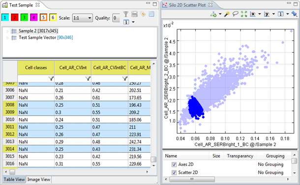

The 2D Scatter Plot uses cartesian coordinates to display the values of all the wells as a collection of points (the cells) in the silo on a 2D chart.
The 2D Scatter Plot is used to view the spread of the points (cells) according to 2 features, chosen on the x and y axis accordingly. These features need to be from the same silo group.

As can be seen on the image above, selected points (cells) will also be selected in the silo editor.
| Scatter 2D Layer | This will add a Scatter Layer to the plot. This can be used to imitate the 2D Scatter Plot. |
| Density 2D Layer | This will add another layer of the default Density Plot. |
| Contour 2D Layer | This will show gravity lines around areas according to the density. We recommend that you smoothen the lines with the layer settings for a better result. |